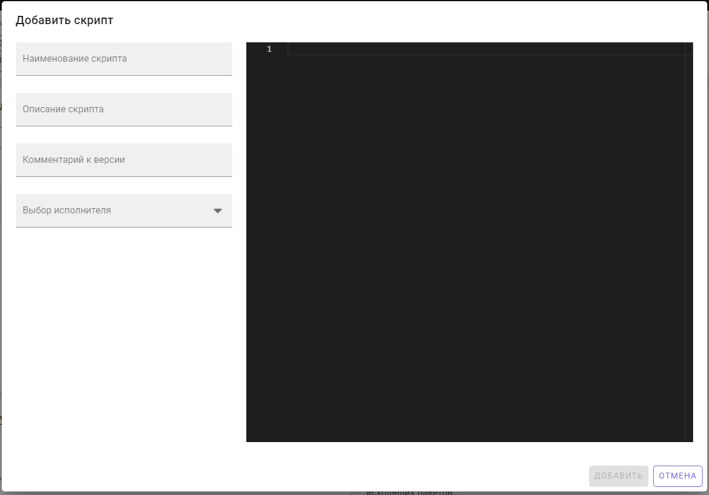
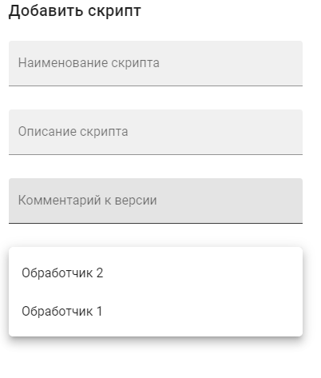
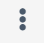
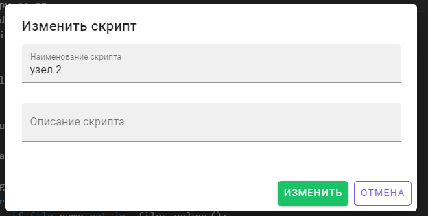
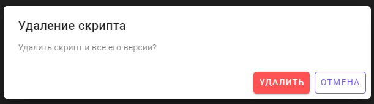
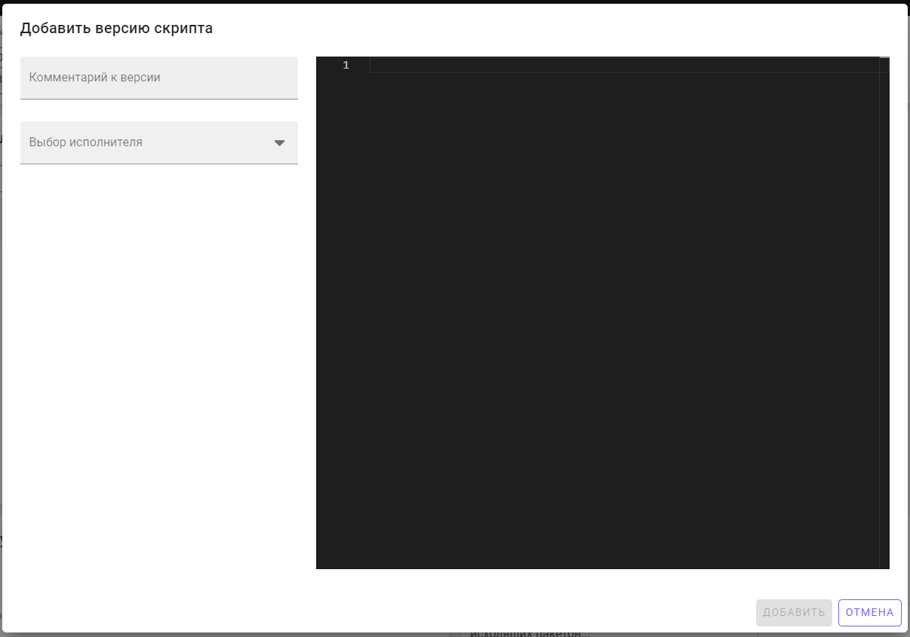
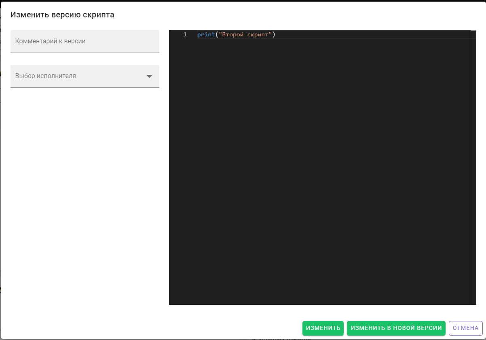
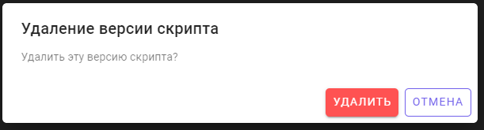
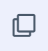
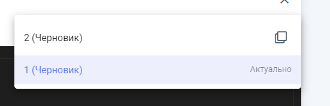

Виджет предназначен для работы со скриптами и их версиями.
Виджет состоит из следующих элементов:
Элемент предназначен для создания нового скрипта. При нажатии на элемент откроется форма создания скрипта. Необходимо заполнить все поля формы: наименование скрипта, описание скрипта, комментарии к версии, выбор исполнителя. Далее необходимо нажать на кнопку "Добавить". Для отмены операции необходимо нажать на кнопку "Отмена".

Система позволяет выбирать исполнителя (аппаратные средства) при выполнении расчётов. Выбор исполнителя представляет из себя раскрываемый список с доступными исполнителями.

Область предназначена для отображения списка скриптов узла и текста скриптов, а также управления скриптами. Для выбора действия со скриптом необходимо выбрать скрипт из списка и нажать на кнопку  .
Доступные элементы:
Элемент предназначен для установки запускающего скрипта. Запускающий скрипт – скрипт, который срабатывает при запуске узла. Для того, чтобы сделать скрипт запускающим, нужно нажать на кнопку справа от названия скрипта, затем нажать на объект "Сделать запускающим". После этого, возле скрипта появится надпись "Запускающий".
Элемент предназначен для изменений информации о скрипте. При нажатии на элемент откроется форма редактирования скрипта. Необходимо скорректировать нужные поля формы: наименование скрипта, описание скрипта. Далее необходимо нажать на кнопку "Изменить". Для отмены операции необходимо нажать на кнопку "Отмена".

Элемент предназначен для удаления скрипта. При нажатии на элемент откроется форма подтверждения удаления скрипта. Для удаления скрипта необходимо нажать на кнопку "Удалить". Для отмены операции необходимо нажать на кнопку "Отмена".

Элемент предназначен для создания версии скрипта и доступен после выбора нужного скрипта из списка в области отображения скриптов. При нажатии на элемент откроется форма добавления версии скрипта. Необходимо заполнить все поля формы: комментарий к версии, выбор исполнителя, ввести текст скрипта (аналогично разделу "кнопка "Добавить скрипт"). Далее необходимо нажать на кнопку "Добавить". Для отмены операции необходимо нажать на кнопку "Отмена".

Элемент предназначен для изменения версии скрипта и доступен после выбора нужного скрипта из списка в области отображения скриптов. При нажатии на элемент откроется форма изменения версии скрипта. Необходимо скорректировать нужные поля формы: комментарий к версии, выбор исполнителя, изменить текст скрипта (аналогично разделу "кнопка "Добавить скрипт"). Далее необходимо нажать на кнопку:
Для отмены операции необходимо нажать на кнопку "Отмена".

Элемент предназначен для удаления версии скрипта и доступен после выбора нужного скрипта из списка в области отображения скриптов. При нажатии на элемент откроется форма подтверждения удаления версии скрипта. Для подтверждения операции необходимо нажать на кнопку "Удалить". Для отмены операции необходимо нажать на кнопку "Отмена".

Элемент предназначен для выбора и применения к узлу версии скрипта и доступен после выбора нужного скрипта из списка в области отображения скриптов. При нажатии на элемент откроется список версий скрипта. Для выбора нужной версии необходимо щелкнуть по ней левой кнопкой мыши. Текст выбранной версии скрипта отобразится в правой части области отображения скриптов.
Для установки актуальной версии скрипта необходимо выбрать нужную версию скрипта и щелкнуть по соответствующей кнопке "Сделать версию актуальной" . После этого справа от названия версии скрипта появится надпись "Актуально".
